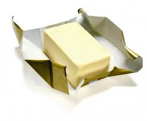
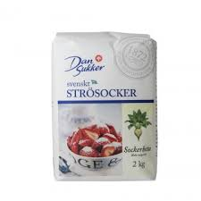
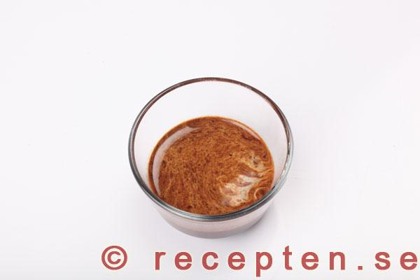
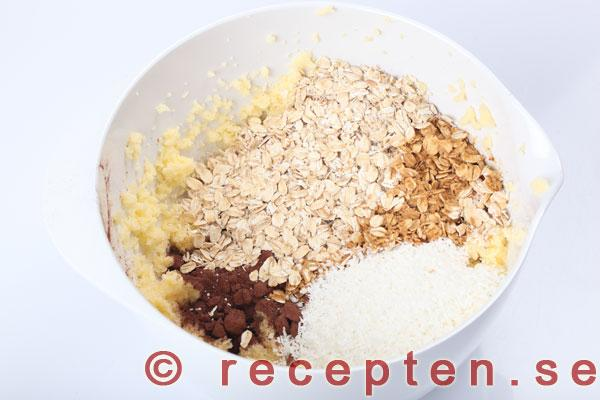
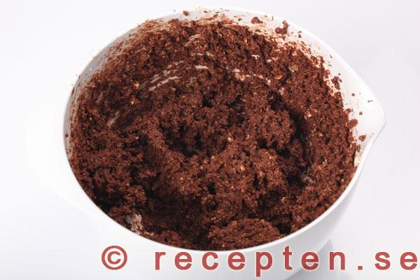
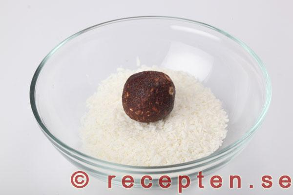
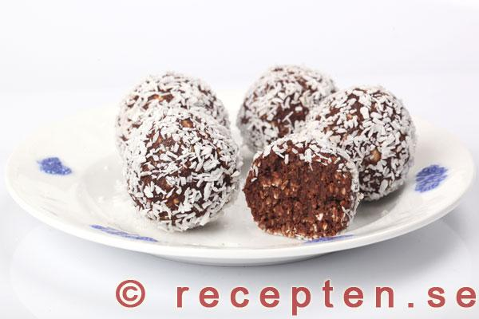

Smör, strösocker, vaniljsocker. |

Smör och socker vispat. |
Mät upp smör, strösocker och vaniljsocker i en bunke. Låt stå framme i rumstemperatur tills blivit rumsvarmt. Skär gärna smöret i mindre bitar så går det fort.
Vispa till en jämn med elvisp.
- 150 g smör 
زبدة
- 1.5 dl strösocker 
كر,,"سك
- 1 msk vaniljsocker

|

Vatten och snabbkaffepulver. |
Om du väljer alternativet kaffe med snabbkaffepulver - blanda då med vatten. (Det går också bra att använda bryggt eller något av de andra alternativen vanligt vatten eller apelsinjuice beroende på vilken smak man vill ha på sina chokladbollar, se ingredienslistan.)
- 2-3 tsk snabbkaffepulver och 2-3 msk vatten
|

Ingredienser till chokladbollssmeten tillsatta. |

Chokladbollssmeten. |
Tillsätt kaffe (eller vatten eller ), kakao, havregryn och kokosflingor och rör till en jämn smet med elvisp. Kör gärna lite extra, gärna ca 5 minuter med elvispen så blir smeten ännu godare.
- 2-3 msk bryggt kaffe
- eller 2-3 tsk snabbkaffepulver och 2-3 msk vatten
- eller 2-3 msk vatten
- eller 2-3 msk apelsinjuice
- 4 msk kakao
- 3.5 dl havregryn
- 1 dl kokosflingor
|

Chokladboll och kokosflingor. |
Chokladboll rullad i kokosflingor. |
Om smeten är väldigt lös och kletig kan man ställa in den i kylen eller frysen en stund innan man rullar bollar.
Häll upp kokosflingor eller pärlsocker i en djup tallrik. Rulla bollar i valfri storlek av smeten och rulla bollarna i kokosflingorna eller pärlsockret.
Lägg chokladbollarna i en burk och förvara i kylskåp. De går också att frysa in.
- ca 0.75 dl kokosflingor
- eller ca 0.75 dl pärlsocker
|

Serverade chokladbollar. |
Servera chokladbollarna kylskåpskalla, då är de godast tycker jag. Man kan annars låta dem stå framme i rumstemperatur en stund så blir de mjukare men även kladdigare.